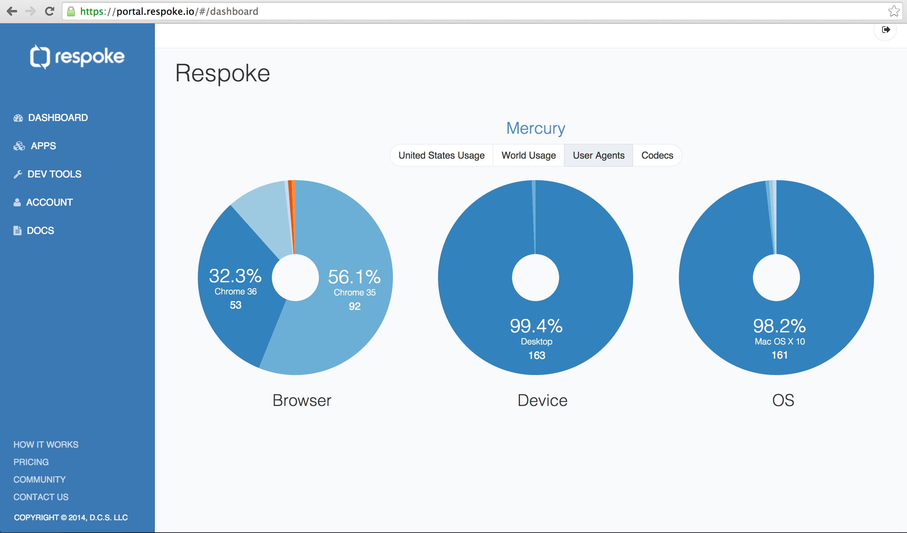

Analytics Or, as we affectionately call it here at Respoke Central, Babylitics. After your app gets some traffic, you’ll see maps and charts on your dashboard, this includes US Usage, World Usage, a breakdown of User Agents, and a codecs breakdown. We are just getting started, so expect to see more analytics soon!
